Префектура Миядзаки · город Миядзаки и Такатихо · еда
Обед поезда «36 плюс 3»: два ресторана Миядзаки, остров Аосима и карт над ущельем Такатихо
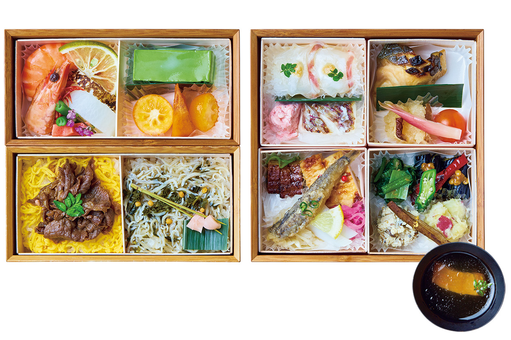
Поезд «36 плюс 3» объезжает Кюсю по кругу, и на отрезке из Миядзаки на север пассажиров кормят два местных ресторана. В оба можно прийти и без поезда, а заодно доехать до острова Аосима и прокатиться на карте над ущельями Такатихо.
Поезд
Обед на «Зелёном пути»
«36 плюс 3» это туристический поезд компании JR Kyushu, маршрут которого описывает круг по всему Кюсю. В 2025 году ему исполнилось пять лет. Один из отрезков маршрута называется «Зелёный путь»: поезд идёт из Миядзаки на север, в префектуру Оита, через самые глубинные места острова.
К полудню в вагонах подают обед. Его придумывают повара ресторанов, стоящих вдоль линии, вместе с местными фермерами и рыбаками, и попробовать такие коробки можно только в этом поезде. Пассажиров в купе кормит японский ресторан «Кисэцу рёри Кавано», а тех, кто едет в обычных креслах, итальянский Pappacarbone. Оба находятся в городе Миядзаки.
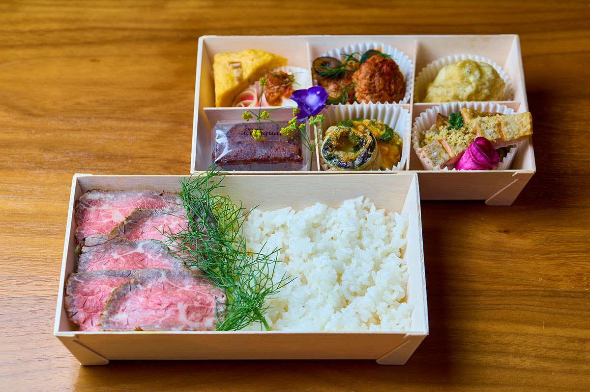
Японская кухня
«Кисэцу рёри Кавано»: Миядзаки в лакированном ящике
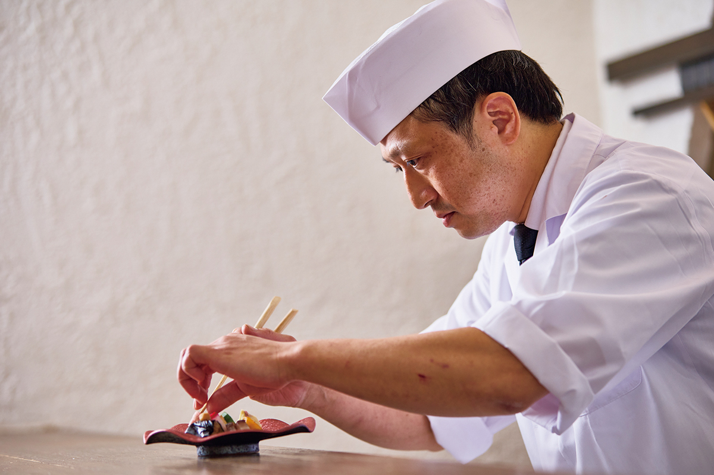
«Попробуйте, как богаты времена года в Миядзаки: именно их мы и хотим передать»
шеф-повар «Кисэцу рёри Кавано»
«Кисэцу рёри Кавано» называют себя рестораном сезонной кухни и готовят для поезда уже много лет. Главных героев в их ящике два, и оба гордость префектуры. Первый: говядина Одзаки, марка, которую знают далеко за пределами Японии. Тонкие обжаренные ломтики кладут на рис с яичной соломкой. Второй: морской лещ с острова Симаура у побережья Нобэоки. Его подают тремя способами: со свежим мисо, запечённым в солёном рисовом солоде сио-кодзи и с соусом из умэ.
Шеф хочет, чтобы пассажиры, двигаясь по «Зелёному пути» на север, почувствовали дорогу и через еду. Поэтому в обед попадают продукты из разных частей префектуры: батат с юга, вяленая соломка из дайкона из посёлка Кунитоми в центре. Тонкость подачи и выбор цвета он привёз из Киото, где когда-то учился ремеслу.
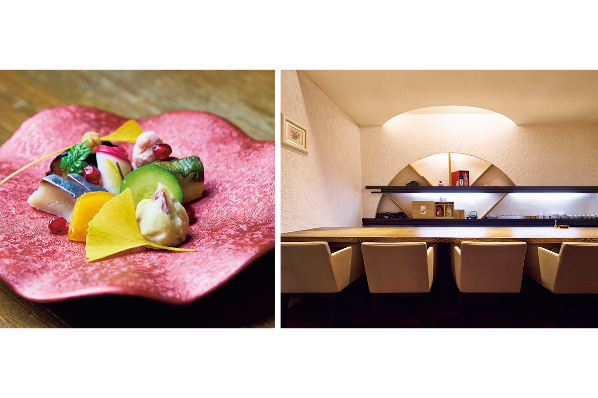
В самом ресторане тоже есть блюдо с говядиной Одзаки, которое в поезде не подают. Стейк-дон из неё стоил 2860 иен в 2024 году: мясо мягкое, а чем дольше жуёшь, тем глубже вкус.
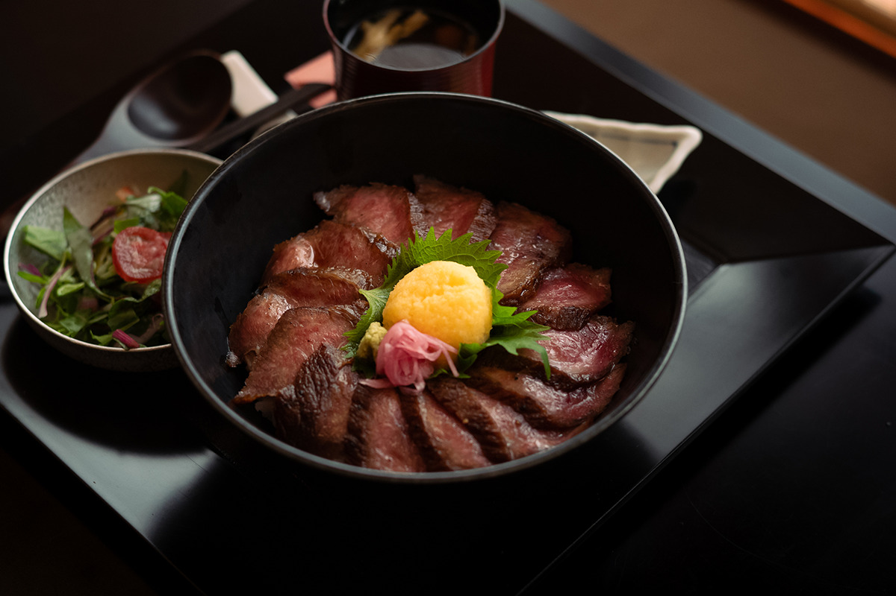
«Кисэцу рёри Кавано»
- Адрес
- префектура Миядзаки, город Миядзаки, Тикуса-мати, 1-22
- Телефон
- +81 985-23-2077
- Часы работы
- 11:30–14:00, 17:00–22:00
- Выходные
- понедельник
- Цены / Вход
- стейк-дон из говядины Одзаки 2860 иен (2024 год)
- Сайт
- kisetu-kawano.jp
Итальянская кухня
Pappacarbone: рыбная Италия по-миядзакски
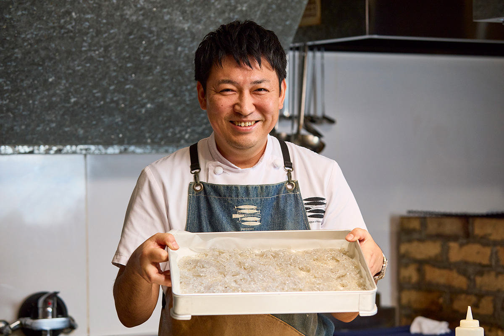
«В нашу еду вложены и мысли тех, кто растит продукты»
шеф-повар Pappacarbone
Pappacarbone собирает в коробку бэнто домашнюю кухню Неаполя. Шеф и владелец ресторана называет свой стиль «рыбной итальянской кухней». Ремеслу он учился в Неаполе и говорит, что у Неаполя и Миядзаки похожи и характер людей, и продукты. Например, и там и тут ловят мальков сирасу. Сирасу из Миядзаки считаются одними из лучших в стране, и в бэнто они попадают в виде фриттера, если позволяет сезон.
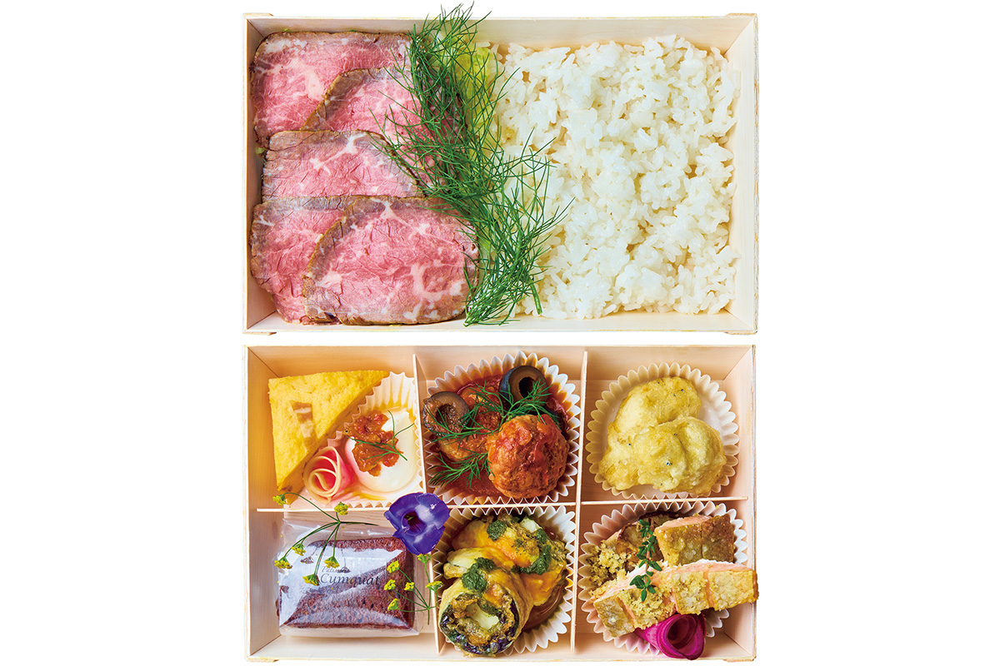
По словам шефа, поезд стал общим делом для ресторана и производителей: компания охотно работает с молодыми фермерами и с теми, кто только пришёл в профессию, и все растут вместе. Ростбиф из чёрной японской говядины марки «Хината» из Миядзаки так полюбился пассажирам, что некоторые говорят, будто выбрали «Зелёный путь» только ради него. Отзывы пассажиров экипаж каждый раз передаёт в рестораны, и от этого круга, как считают в Pappacarbone, выигрывает вся кухня Кюсю.
«Производители с каждым годом работают всё лучше, и каждый год они нас удивляют»
шеф-повар Pappacarbone
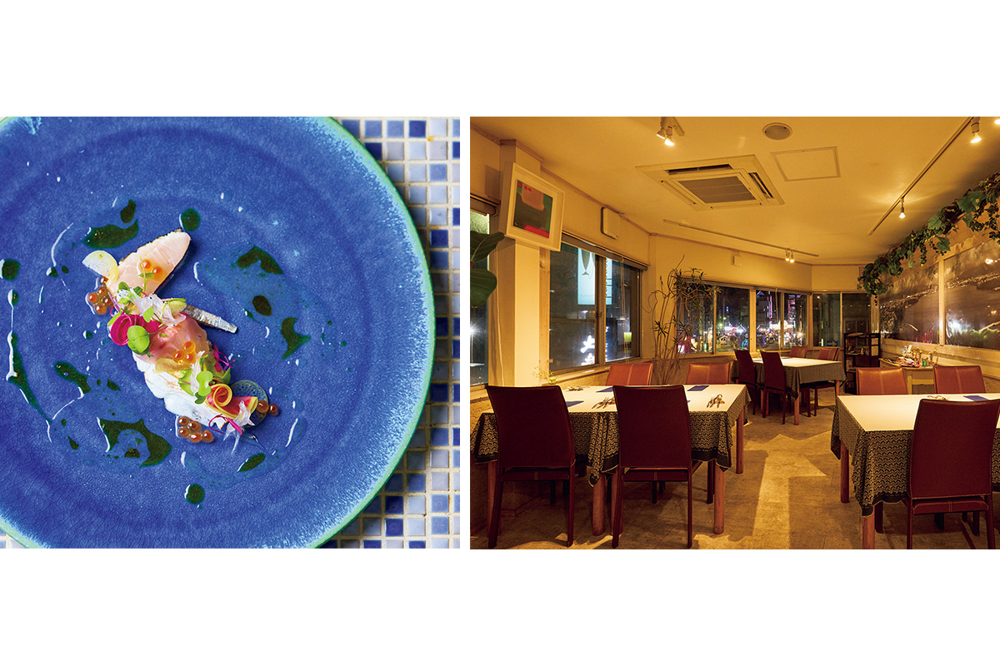
Pappacarbone
- Адрес
- префектура Миядзаки, город Миядзаки (около 15 минут пешком от станции Миядзаки)
- Телефон
- +81 985-48-6636
Аосима
Остров и святилище у станции Аосима
Перед обедом в «Кавано» можно заглянуть на остров Аосима к югу от центра города. От станции Аосима к морю выходит широкий открытый пляж, а через мостик на остров ведёт дорога к святилищу Аосима. Вокруг острова из воды поднимаются ряды плоских каменных гребней, которые называют «стиральной доской демона».
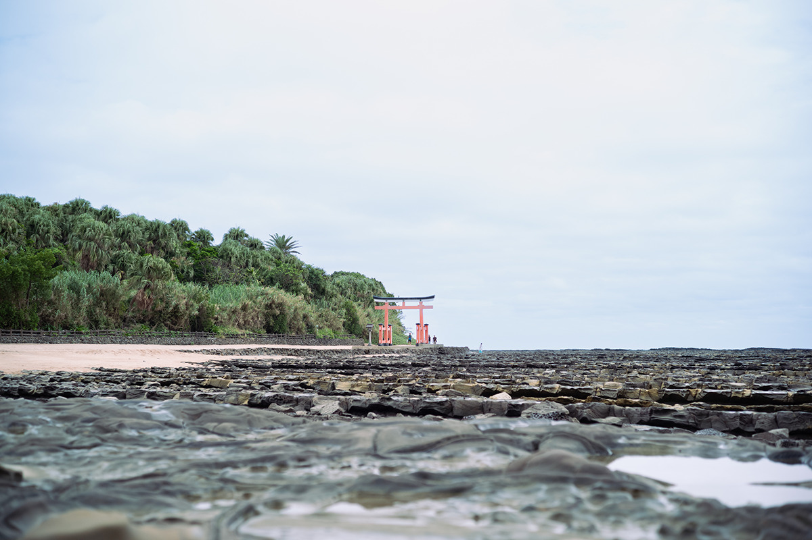
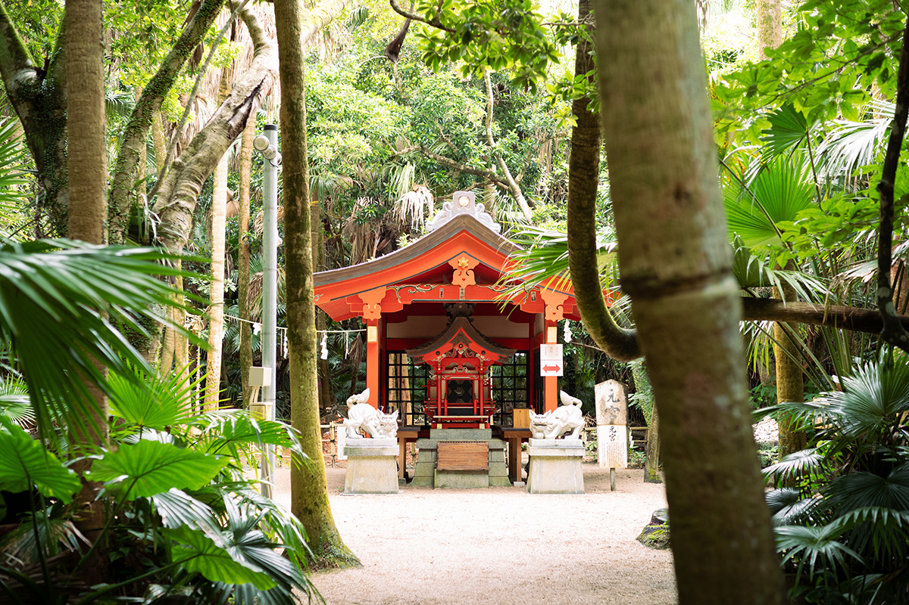
Святилище Аосима
- Адрес
- префектура Миядзаки, город Миядзаки, Аосима, 2-13-1
Такатихо
Карт по старой железной дороге
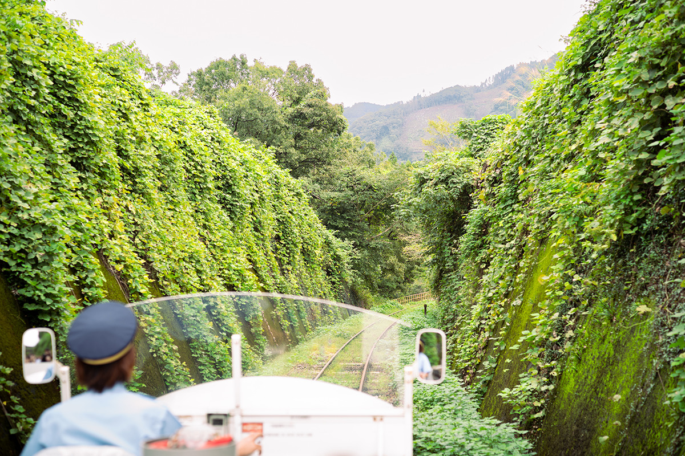
После обеда стоит поехать на север префектуры, в посёлок Такатихо, место, связанное с японскими мифами. Его знают прежде всего по святилищам из легенд, но здесь есть и другой способ увидеть горы, леса и ущелья. Железная дорога «Такатихо Аматэрасу» пустила по старым рельсам бывшей линии открытый «Гранд супер-карт». Он идёт медленно, туда и обратно 5,1 км за 30 минут, и всё это время вокруг глубокий лес, ущелья и горы. После такой поездки суета остаётся где-то далеко.
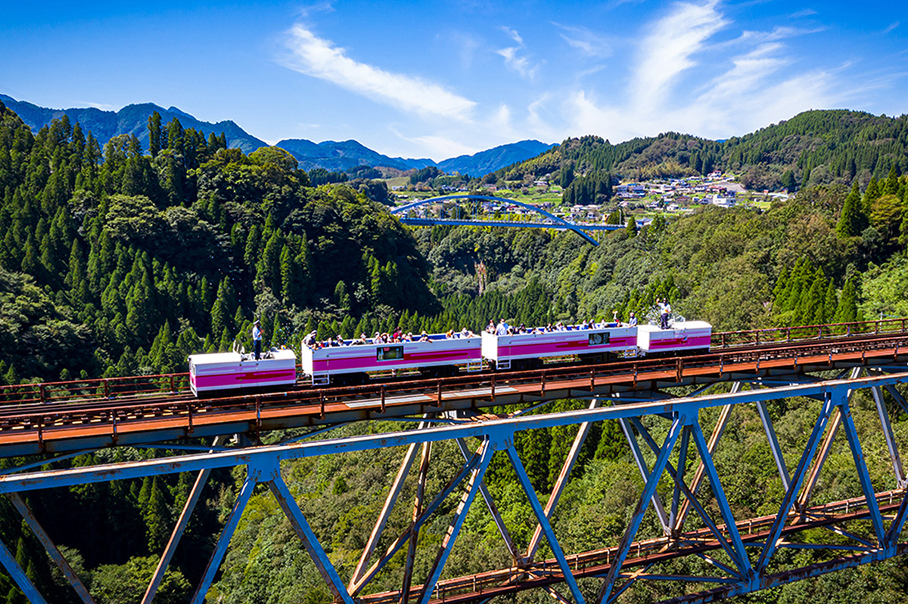
Железная дорога «Такатихо Аматэрасу»
- Адрес
- префектура Миядзаки, уезд Нисиусуки, посёлок Такатихо, Митаи, 1425-1
- Телефон
- +81 982-72-3216
Фото: Kousaku Kitajima, Robert Ippei.